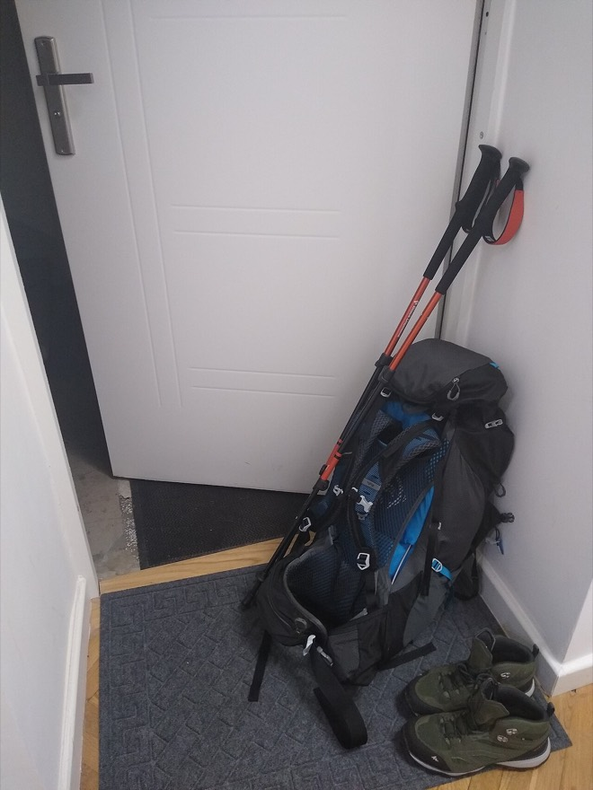

칠판에 1 + 1 + 1 + 1 + 1 + 1 + 1 + 1 이라고 썼어요. 답은? 하나씩 세어 보면 8이에요.
이제 맨 뒤에 + 1을 하나 더 썼어요. 답은? 바로 9라고 대답할 수 있죠. 처음부터 다시 세지 않았어요. 앞에서 구한 8을 기억하고 있었기 때문이에요.
이것이 동적 계획법의 전부예요. “앞에서 구한 답을 기억해 두고, 거기서부터 이어서 계산한다.”
39차시 · 13주차 · Ⅲ 알고리즘 전체 보기
코드 아래 💡 코드 설명을 펼쳐 보고, 빈칸이 있으면 채운 뒤 실행해 보세요.
교과서 · Ⅲ 3-2 관계 기반 알고리즘의 설계 — 동적 계획법
한 번 계산한 답은 적어 두었다가 다시 쓴다. 이 간단한 습관 하나로 몇 년 걸릴 계산이 눈 깜짝할 사이에 끝나요.
똑같은 계산을 여러 번 하지 않으려면 어떻게 해야 할까?
칠판에 1 + 1 + 1 + 1 + 1 + 1 + 1 + 1 이라고 썼어요. 답은? 하나씩 세어 보면 8이에요.
이제 맨 뒤에 + 1을 하나 더 썼어요. 답은? 바로 9라고 대답할 수 있죠. 처음부터 다시 세지 않았어요. 앞에서 구한 8을 기억하고 있었기 때문이에요.
이것이 동적 계획법의 전부예요. “앞에서 구한 답을 기억해 두고, 거기서부터 이어서 계산한다.”
동적 계획법(dynamic programming, 줄여서 DP)은 전체 문제와 부분 문제의 관계를 이용해 문제를 풀되, 여러 번 되풀이해서 계산되는 부분 문제의 답을 저장해 두고 다시 쓰는 방법이에요. 답을 적어 두는 메모리 공간을 동적 테이블이라고 하고, 리스트나 딕셔너리를 써요.
| 구분 | 분할 정복법 | 동적 계획법 |
|---|---|---|
| 같은 점 | 문제를 부분 문제로 나누고, 전체와 부분의 관계로 푼다 (둘 다 관계 기반 알고리즘) | |
| 부분 문제 | 서로 겹치지 않는다 (퀵 정렬의 왼쪽·오른쪽) | 같은 부분 문제가 여러 번 다시 나온다 |
| 다른 점 | 부분 문제를 그때그때 푼다 | 푼 답을 동적 테이블에 저장해 중복 계산을 없앤다 |
피보나치수열은 앞의 두 수를 더해 다음 수를 만드는 수열이에요. 1, 1, 2, 3, 5, 8, 13, 21 … n번째 수를 f(n)이라고 하면 관계식은 이래요.
① 재귀 함수만 쓰면 (분할 정복 방식)
call_count = 0 # 함수가 몇 번 불렸는지 세기
def f(n):
global call_count
call_count += 1
if n <= 2:
return 1
else:
return f(n - 1) + f(n - 2)
print(f(5))
print('함수 호출 횟수:', call_count)
코드는 짧고 이해하기 쉬워요. 하지만 f(5)를 구하는 데 함수를 9번이나 불러요. f(3)을 구하려고 f(2)와 f(1)을 불렀는데, 다른 가지에서 똑같은 f(3)을 처음부터 또 계산하기 때문이에요.
n이 커지면 가지가 2배씩 불어나요. 이 코드로 f(50)을 구하려 하면 함수를 250억 번 넘게 불러야 해서 수업 시간 안에 답을 볼 수 없어요.
② 동적 계획법 — 계산한 답을 dp에 적어 두기
dp = {1: 1, 2: 1} # dp 딕셔너리를 동적 테이블로 사용
def f(n):
if : # 이미 계산해서 적어 둔 값이면
return dp[n] # 그대로 꺼내 쓰기
# 처음 보는 값이면 계산해서 적어 두기
return dp[n]
print(f(10))
print(f(50)) # 이제 f(50)도 바로 나와요
print(dp)
f(10)을 부르고 나면 동적 테이블은 이렇게 채워져요.
| n | 1 | 2 | 3 | 4 | 5 | 6 | 7 | 8 | 9 | 10 |
|---|---|---|---|---|---|---|---|---|---|---|
| dp[n] | 1 | 1 | 2 | 3 | 5 | 8 | 13 | 21 | 34 | 55 |
막대는 함수 호출 횟수입니다. n을 오른쪽으로 밀어 보세요. 재귀는 O(2ⁿ)으로 폭발하지만, 동적 계획법은 O(n)이라 거의 늘지 않습니다.
동적 계획법에는 두 가지 방식이 있어요.
f(10)을 먼저 부르고, 필요한 f(9), f(8) … 을 재귀로 불러요. 한 번 구한 값은 저장해 두었다가 다시 불리면 꺼내 써요. 이렇게 적어 두는 기법을 메모이제이션(memoization)이라고 해요.
도구: 재귀 함수 + 저장
dp[1], dp[2]에서 시작해 dp[3], dp[4] … 순서로 표를 차례로 채워 가요. 재귀 함수를 쓰지 않아요.
도구: 반복문
상향식 — 반복문으로 테이블 채우기
n = 10
dp = {} # 동적 테이블을 딕셔너리로 준비
dp[1] = 1
dp[2] = 1
for i in range(3, n + 1): # 3번째부터 차례로
dp[i] = dp[i - 1] + dp[i - 2]
print(dp[n])
계단을 한 번에 한 칸 또는 두 칸 오를 수 있어요. 계단 3칸을 오르는 방법은 세 가지예요.
그렇다면 n칸을 오르는 방법은 모두 몇 가지일까요? 마지막 한 걸음을 생각해 보면 돼요. n번째 칸에 도착하는 방법은 딱 두 가지뿐이에요.
① 재귀만 쓰면 — 같은 계산을 되풀이해 O(2ⁿ)
def climbstairs(n):
if n == 1:
return 1
elif n == 2:
return 2
return climbstairs(n - 1) + climbstairs(n - 2)
print(climbstairs(10))
② 하향식 동적 계획법 — 계산한 값을 저장해 재사용, O(n)
dp = {1: 1, 2: 2}
def climbstairs(n):
if n in dp:
return dp[n]
dp[n] = climbstairs(n - 1) + climbstairs(n - 2)
return dp[n]
print(climbstairs(10))
③ 상향식 동적 계획법 — 반복문으로, O(n)
n = 10
dp = {} # 동적 테이블
dp[1] = 1
dp[2] = 2
for i in range(3, n + 1):
dp[i] = dp[i - 1] + dp[i - 2]
print(dp[n])

최대 5kg까지 담을 수 있는 배낭이 있고, 물건 네 개가 있어요. 무게를 넘기지 않으면서 가치의 합이 가장 크게 담으려면?
| 물건 | 무게 | 가치 |
|---|---|---|
| 1번 | 2kg | 3 |
| 2번 | 3kg | 4 |
| 3번 | 4kg | 5 |
| 4번 | 5kg | 6 |
물건이 4개면 담는 방법은 2 × 2 × 2 × 2 = 16가지예요. 물건이 30개라면 10억 가지가 넘어요.
물건마다 ‘담는다 / 안 담는다’ 두 가지이니 경우의 수는 2 × 2 × … = 2ⁿ. 물건 4개면 16가지지만 30개면 10억 가지가 넘어요. O(2ⁿ) — 너무 느려요.
가치가 가장 큰 4번(5kg, 가치 6)을 담으면 꽉 차서 끝. 총 가치 6. 그런데 1번 + 2번(2 + 3 = 5kg)을 담으면 가치가 7! 탐욕법은 실패해요. ‘무게에 비해 가치가 높은 것부터’ 담는 식으로 기준을 바꿔도, 탐욕법은 늘 가장 좋은 답을 보장하지는 못해요.
“물건을 i번까지만 쓸 수 있고 배낭이 w kg짜리라면 최대 가치는?”이라는 작은 문제들의 답을 표에 적어 가며 풀어요. 빠르고 정확해요.
동적 테이블 만들기. 표의 칸 dp[i][w]에는 “1번부터 i번 물건까지만 생각할 때, w kg짜리 배낭에 담을 수 있는 최대 가치”를 적어요. 예를 들어 dp[2][5]는 ‘1·2번 물건만 가지고 5kg 배낭을 채울 때의 최대 가치’예요.
칸을 채울 때는 i번 물건을 두고 딱 하나만 고민하면 돼요. “이 물건을 넣을까, 말까?”
| 물건 \ 배낭 용량 w | 0 | 1 | 2 | 3 | 4 | 5 |
|---|---|---|---|---|---|---|
| i = 0 (물건 없음) | 0 | 0 | 0 | 0 | 0 | 0 |
| i = 1 (2kg, 가치 3) | 0 | 0 | 3 | 3 | 3 | 3 |
| i = 2 (3kg, 가치 4) | 0 | 0 | 3 | 4 | 4 | 7 |
| i = 3 (4kg, 가치 5) | 0 | 0 | 3 | 4 | 5 | 7 |
| i = 4 (5kg, 가치 6) | 0 | 0 | 3 | 4 | 5 | 7 ← 답 |
def knapsack(W, wt, val, n): # W: 배낭 무게 한도, wt: 무게, val: 가치, n: 물건 수
dp = [[0 for x in range(W + 1)] for x in range(n + 1)] # (n+1)줄 × (W+1)칸 표를 0으로
for i in range(n + 1): # i: 물건 번호
for w in range(W + 1): # w: 배낭의 무게 한도
if i == 0 or w == 0: # 물건이 없거나 용량이 0이면
dp[i][w] = 0
elif wt[i - 1] > w: # i번 물건이 너무 무거우면
# 윗칸 값을 그대로
else: # 넣는 경우와 안 넣는 경우 중 큰 값
dp[i][w] = max(, dp[i - 1][w])
return dp[n][W] # 맨 오른쪽 아래 칸이 답
weights = [2, 3, 4, 5] # 각 물건의 무게
values = [3, 4, 5, 6] # 각 물건의 가치
print(knapsack(5, weights, values, 4))
wt[i - 1], 가치는 val[i - 1]이에요. (1번 물건 → 인덱스 0) 이 프로그램은 재귀 없이 반복문으로 작은 문제부터 채워 나가는 상향식 동적 계획법이에요.배낭의 최대 용량이 10kg일 때, 같은 물건 네 개로 가치를 가장 크게 하려면 무엇을 담아야 할까? 위 표를 w = 10까지 늘려 채워 보고, 프로그램으로 확인해 보자.
def knapsack(W, wt, val, n):
dp = [[0 for x in range(W + 1)] for x in range(n + 1)]
for i in range(n + 1):
for w in range(W + 1):
if i == 0 or w == 0:
dp[i][w] = 0
elif wt[i - 1] > w:
dp[i][w] = dp[i - 1][w]
else:
dp[i][w] = max(val[i - 1] + dp[i - 1][w - wt[i - 1]], dp[i - 1][w])
for row in dp: # 완성된 표를 한 줄씩 출력
print(row)
return dp[n][W]
print('최대 가치:', knapsack(5, [2, 3, 4, 5], [3, 4, 5, 6], 4)) # 5를 10으로 바꿔 보자
최대 가치는 13이에요. 1번(2kg) + 2번(3kg) + 4번(5kg) = 정확히 10kg, 가치 3 + 4 + 6 = 13.
| 물건 \ 배낭 용량 w | 0 | 1 | 2 | 3 | 4 | 5 | 6 | 7 | 8 | 9 | 10 |
|---|---|---|---|---|---|---|---|---|---|---|---|
| i = 0 (물건 없음) | 0 | 0 | 0 | 0 | 0 | 0 | 0 | 0 | 0 | 0 | 0 |
| i = 1 (2kg, 가치 3) | 0 | 0 | 3 | 3 | 3 | 3 | 3 | 3 | 3 | 3 | 3 |
| i = 2 (3kg, 가치 4) | 0 | 0 | 3 | 4 | 4 | 7 | 7 | 7 | 7 | 7 | 7 |
| i = 3 (4kg, 가치 5) | 0 | 0 | 3 | 4 | 5 | 7 | 8 | 9 | 9 | 12 | 12 |
| i = 4 (5kg, 가치 6) | 0 | 0 | 3 | 4 | 5 | 7 | 8 | 9 | 10 | 12 | 13 ← 답 |
1원, 3원, 4원짜리 동전으로 10원을 만들려고 해요. 필요한 동전의 최소 개수는?
탐욕법은 가장 큰 4원부터 써서 4 + 4 + 1 + 1 = 4개를 내놓아요. 하지만 4 + 3 + 3 = 3개로도 만들 수 있어요. 동전이 서로 배수 관계가 아니면 탐욕법은 최적해를 보장하지 못해요. 동적 계획법으로 풀어 봐요.
i원을 만드는 최소 동전 개수를 dp[i]라고 할 때 관계식을 세워 보자. (마지막에 낸 동전이 1원, 3원, 4원 중 무엇인지로 나눠 생각해 보자.)마지막 동전이 1원이면 그 전에 i−1원, 3원이면 i−3원, 4원이면 i−4원을 만들어 둔 상태예요. 셋 중 동전을 가장 적게 쓴 경우에 하나를 더하면 돼요.
coins = [1, 3, 4]
target = 10
INF = float('inf')
dp = [0] + [INF] * target # dp[0] = 0, 나머지는 아직 모름
for i in range(1, target + 1): # 1원부터 차례로 (상향식)
for c in coins:
if i - c >= 0: # c원짜리를 마지막에 낼 수 있으면
dp[i] = min(dp[i], dp[i - c] + 1)
print(dp)
print(f'{target}원을 만드는 최소 동전 개수: {dp[target]}')×. 계산 결과를 동적 테이블에 저장해 중복 계산을 없애는 것은 동적 계획법이에요.
○. 재귀만 쓰면 O(2ⁿ), 동적 계획법은 O(n)이에요.
메모이제이션.
배낭 채우기 문제 — 동적 계획법, 퀵 정렬과 합병 정렬 — 분할 정복법.
둘 다 문제를 부분 문제로 나누고 전체와 부분의 관계를 이용하는 관계 기반 알고리즘이에요. 다만 동적 계획법은 여러 번 되풀이해 나오는 부분 문제의 답을 동적 테이블에 저장해 두고 재사용해서 중복 계산을 없애요.
교과서 · Ⅲ 연습 코드 문제
한 번에 1칸, 2칸, 3칸을 오를 수 있을 때 n개의 계단을 오르는 방법의 수를 구하시오.
n=3 → 4가지, n=5 → 13가지, n=10 → 274가지
관계식은 f(n) = f(n−1) + f(n−2) + f(n−3)입니다. 상향식으로 표를 채우면 재귀보다 훨씬 빠릅니다.
def climb(n):
dp = [0] * (n + 1)
dp[0] = 1 # 아무것도 안 오른 경우 1가지
for i in range(1, n + 1):
for step in (1, 2, 3):
if i - step >= 0:
dp[i] += dp[i - step]
return dp[n]
for n in [3, 5, 10]:
print(f'{n}계단 → {climb(n)}가지')
코드를 고쳐서 ▶ 실행하면 출력이 맞는지 바로 알려 줘요. 막히면 힌트부터 열어 보세요.
피보나치 f(20)을 두 방법으로 구하며 함수 호출 횟수를 비교해요. 메모이제이션 함수 g에서 ① 이미 적어 둔 값인지 확인하는 조건 ② 돌려줄 값을 ___에 채우세요. 호출 횟수가 몇 배나 차이 나나요?
calls = 0
def f(n): # 재귀만 쓰기
global calls
calls += 1
if n <= 2:
return 1
return f(n - 1) + f(n - 2)
memo_calls = 0
dp = {1: 1, 2: 1}
def g(n): # 메모이제이션
global memo_calls
memo_calls += 1
if ___:
return dp[n]
dp[n] = g(n - 1) + g(n - 2)
return ___
print('재귀만:', f(20), '/ 호출', calls, '번')
print('메모이제이션:', g(20), '/ 호출', memo_calls, '번')딕셔너리에 키가 있는지는 n in dp로 확인해요. 계산해 적어 둔 값은 dp[n]이에요.
calls = 0
def f(n): # 재귀만 쓰기
global calls
calls += 1
if n <= 2:
return 1
return f(n - 1) + f(n - 2)
memo_calls = 0
dp = {1: 1, 2: 1}
def g(n): # 메모이제이션
global memo_calls
memo_calls += 1
if n in dp:
return dp[n]
dp[n] = g(n - 1) + g(n - 2)
return dp[n]
print('재귀만:', f(20), '/ 호출', calls, '번')
print('메모이제이션:', g(20), '/ 호출', memo_calls, '번')1·3·4원 동전으로 10원을 만드는 최소 개수를 구하는데 표가 모두 0이 되고 답도 0이에요. 동적 테이블의 처음 값이 잘못되었어요. 고쳐서 3이 나오게 해 보세요.
coins = [1, 3, 4]
target = 10
INF = float('inf')
dp = [0] * (target + 1)
for i in range(1, target + 1):
for c in coins:
if i - c >= 0:
dp[i] = min(dp[i], dp[i - c] + 1)
print(dp)
print(f'{target}원을 만드는 최소 동전 개수: {dp[target]}')dp[0]만 0이고, 나머지는 아직 모르는 값이라 무한대(INF)여야 min으로 줄여 나갈 수 있어요: [0] + [INF] * target
coins = [1, 3, 4]
target = 10
INF = float('inf')
dp = [0] + [INF] * target
for i in range(1, target + 1):
for c in coins:
if i - c >= 0:
dp[i] = min(dp[i], dp[i - c] + 1)
print(dp)
print(f'{target}원을 만드는 최소 동전 개수: {dp[target]}')새 물건 4개(무게 1·3·4·5kg, 가치 1·4·5·7)를 7kg 배낭에 담아요. 칸 dp[i][w]를 채우는 관계식을 직접 써 보세요: i번 물건이 w보다 무거우면 윗칸 그대로, 아니면 ‘넣는다/안 넣는다’ 중 큰 값. (i번 물건의 무게는 weights[i - 1])
weights = [1, 3, 4, 5]
values = [1, 4, 5, 7]
W, n = 7, 4
dp = [[0] * (W + 1) for _ in range(n + 1)]
for i in range(1, n + 1):
for w in range(1, W + 1):
pass # 여기에 관계식
for row in dp:
print(row)
print('최대 가치:', dp[n][W])if weights[i - 1] > w: dp[i][w] = dp[i - 1][w] / else: dp[i][w] = max(values[i - 1] + dp[i - 1][w - weights[i - 1]], dp[i - 1][w])
weights = [1, 3, 4, 5]
values = [1, 4, 5, 7]
W, n = 7, 4
dp = [[0] * (W + 1) for _ in range(n + 1)]
for i in range(1, n + 1):
for w in range(1, W + 1):
if weights[i - 1] > w:
dp[i][w] = dp[i - 1][w]
else:
dp[i][w] = max(values[i - 1] + dp[i - 1][w - weights[i - 1]], dp[i - 1][w])
for row in dp:
print(row)
print('최대 가치:', dp[n][W])해설 — 둘 다 관계 기반이지만, 동적 계획법은 같은 부분 문제가 다시 나올 때 동적 테이블에서 꺼내 써서 중복 계산을 없애요.
해설 — 메모이제이션은 계산한 값을 메모해 두는 기법이에요. 반복문으로 표를 채우는 것은 상향식이에요.
오늘 실습에서 재귀만 쓴 f(20)과 메모이제이션 g(20)의 호출 횟수를 적고, 왜 그렇게 차이 나는지 한 문장으로 설명해 보세요.